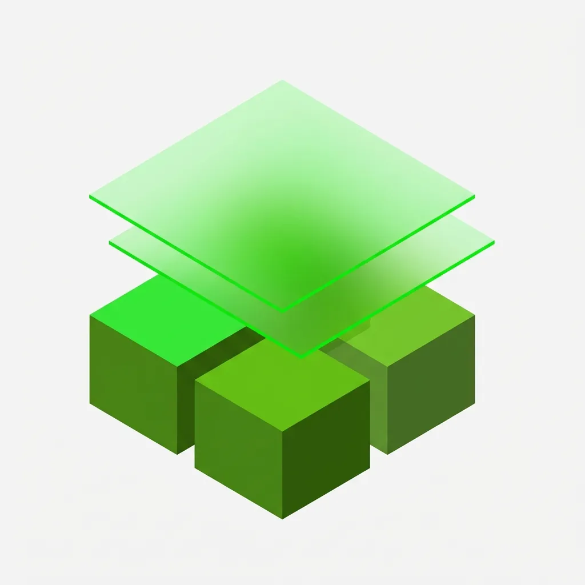

01
Orbital automation
Autonomous decision engines that bring aircraft-grade certainty to a changing sky.
↗THE INFRASTRUCTURE
OF POSSIBILITY
Orbit creates autonomous systems for the edge of Earth and the beginning of everything after it.
DISCOVERLIVE / 28.6139° N 77.2090° E
01 / THE NEW ALTITUDE
Space isn't a destination.
We build the connective tissue between Earth, orbit and deep space — systems that sense, decide, coordinate and endure when the stakes are not theoretical.
OUR POINT OF VIEW ↘02 / ORBITAL INTELLIGENCE
Think at
Every Orbit system has one purpose: make complex environments intelligible at the exact moment a decision matters.
03 / CAPABILITIES
Not a toolkit. An operating philosophy for the places no one has been.
Autonomous decision engines that bring aircraft-grade certainty to a changing sky.
↗From launch readiness to final telemetry, every signal becomes a viable next move.
↗A continuously learning record of the world, drawn from precisely where it changes.
↗
A LIVING SYSTEM
DESIGNED FOR
NO SINGLE POINT
OF FAILURE.
047
ACTIVE MISSIONS99.98
NETWORK UPTIME7.68
KM/S ORBITAL VELOCITYA-01 / LUNAR CORRIDOR
B-12 / SIGNAL GRID
05 / MOTION ATLAS
THE ORBIT VISUAL ARCHIVE
A moving index of the materials, signals and environments that make an Orbit mission unmistakable.
06 / BEGIN HERE
OUR NEXT WINDOW IS OPEN